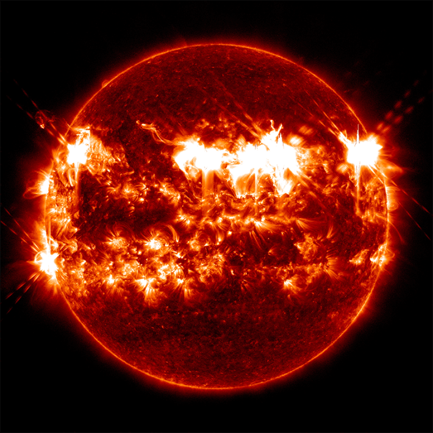

Our star has sent out a series of intense flares over the past day, including the strongest of the year so far. This bombardment arrived thanks to a quickly expanding sunspot that spaceweather.com called “a solar flare factory.” One of the flares, which fell into the most powerful “X” category, sparked radio blackouts in parts of the South Pacific.
In case you haven’t noticed, the sun has wreaked some chaotic space weather recently. In November, our star burped out several X-class solar flares, along with clouds of plasma and magnetic field known as coronal mass ejections. This prompted a dramatic geomagnetic storm that painted stunning auroras in skies around the globe, including displays seen as far south as Florida.
It was no isolated incident: We’ve witnessed some wild space weather over the past few years as solar activity climbed to its estimated peak in 2024. Now, it’s currently following a downhill trend. Around every 11 years, the sun’s magnetic poles flip halfway through its stretch of maximum activity. During this peak, astronomers observe the most sunspots—freckles that form due to a concentration of magnetic field lines. This solar hubbub can result in more coronal mass ejections, which may mess with infrastructure on Earth such as satellite electronics, GPS signals, and electrical power grids.

SOLAR RAUCOUS: A composite image combining six X-class solar flares from November 2025. Credit: NASA/SDO/Scott Wiessinger.
The November event pales in comparison with the strongest geomagnetic storm on record, which was coincidentally associated with the first solar flare ever documented. On the morning of Sept. 1, 1859, amateur astronomer Richard Carrington peeked through his telescope in Surrey, England, and drew a group of sunspots. Suddenly, he observed “two patches of intensely bright and white light” emerge from the spots—these are now recognized as a flare that hurtled electrified gas and subatomic particles toward our planet.
That evening, vibrant auroras illuminated the night sky in North America and reached as far as Cuba and Chile. It was so bright that confused gold miners in the Rocky Mountains got out of bed and made coffee and breakfast at 1 a.m. At around that time in Boston, The New York Times reported, “ordinary print could be read by the light.”
Read more: “The Safety Belt of Our Solar System”
This geomagnetic storm interfered with telegraph communications around the globe. Sparks reportedly leapt from telegraph machines, shocking operators. In Boston, employees of the American Telegraph Company discovered that they could harness auroral current to transmit messages to Portland, Maine, without the need for batteries.
Some people thought they were witnessing the end of the world—or at the very least a nearby fire—but they were actually experiencing the aftermath of a solar flare with the force of 10 billion atomic bombs.
“For observers of the 1859 solar storm, the blood-red displays of the aurora borealis were both beautiful and threatening, a form of contaminating cosmic fire capable of altering day-to-day experience,” wrote Kate Neilsen, then an English Ph.D. student at Boston University, in 2017. Solar phenomena like this storm “brought attention to the unnerving power of the sun to disrupt human activity,” she explained.
At the time, Carrington hypothesized that the solar flare he glimpsed was linked to the geomagnetic storm, but it took more than a century for researchers to discover coronal mass ejections—which typically accompany flares—through direct observation.
Today, scientists know that such an intense geomagnetic storm only occurs about once every 500 years. If a storm of this magnitude were to happen now, blackouts could impact entire regions of the United States and persist for weeks, if not longer. The Midwest and East would likely be most vulnerable, according to a paper published this past October, due to the bedrock beneath these areas that’s more exposed to charged geoelectric fields.
Thankfully, we now have advanced notice before huge solar storms hit. Multiple satellites, including the Deep Space Climate Observatory operated by NASA and NOAA, keep an eye on solar wind to allow us to prepare for these extraterrestrial interruptions—a luxury not afforded to horrified onlookers more than a century ago. 
Enjoying Nautilus? Subscribe to our free newsletter.
Lead image: NASA/SDO